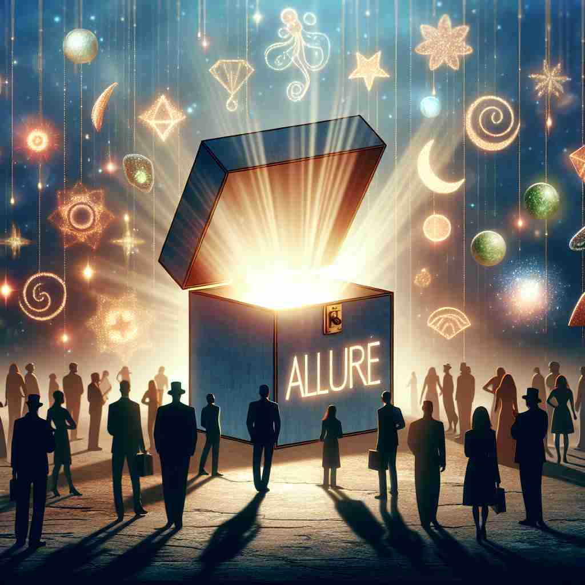

💬 The magical scene can allure the senses of anyone who sees it. 那幅神奇的场景能吸引任何看到它的人的感官。
💬 The allure of the forest draws many visitors every year. 森林的魅力每年吸引着众多游客。
💬 The allure of nature brought the friends together for a perfect adventure. 大自然的魅力让朋友们聚集在一起，共同踏上了一段完美的冒险。

💬 The magical box will allure the audience with its bright light. 神奇的盒子将以其明亮的光芒吸引观众。
🧠 想象'allure'是一种神奇的力量，能够吸引人们靠近。无论是动词还是名词形式，这个词都围绕着'吸引'和'诱惑'的核心概念。动词形式表示主动吸引，而名词形式则描述这种吸引力本身。通过联想一个散发迷人光芒的物体，你可以轻松记住'allure'的各种用法和含义。
🔈 [əˈlʊə(r)]
🗝️ v. to attract or tempt by offering pleasure or advantage 通过提供乐趣或利益来吸引或诱惑。
🎭 在一个古老的市场上，小贩们大声叫卖。一个摊位前，香气四溢的新鲜面包吸引了路人的注意。面包师微笑着，看着人们因面包的香味而驻足，并被那美味的诱惑所吸引。
💬 The promise of adventure allured him to travel the world. 冒险的承诺吸引他周游世界。
🌳 由前缀 "al-"（来自拉丁语 "ad-"，意为"向"）加上词根 "lure"（诱惑）组成，表示 "吸引" 或 "诱惑" 的意思。
🕸️ 1.lure: 诱惑 2.allusion: 暗示 3.allurements: 诱惑物
💡 记忆 "allure" 时，可以联想为 "吸引到一种诱惑"。将 "向某物" 和 "诱惑" 的概念结合，更容易理解这个单词表达的吸引力。